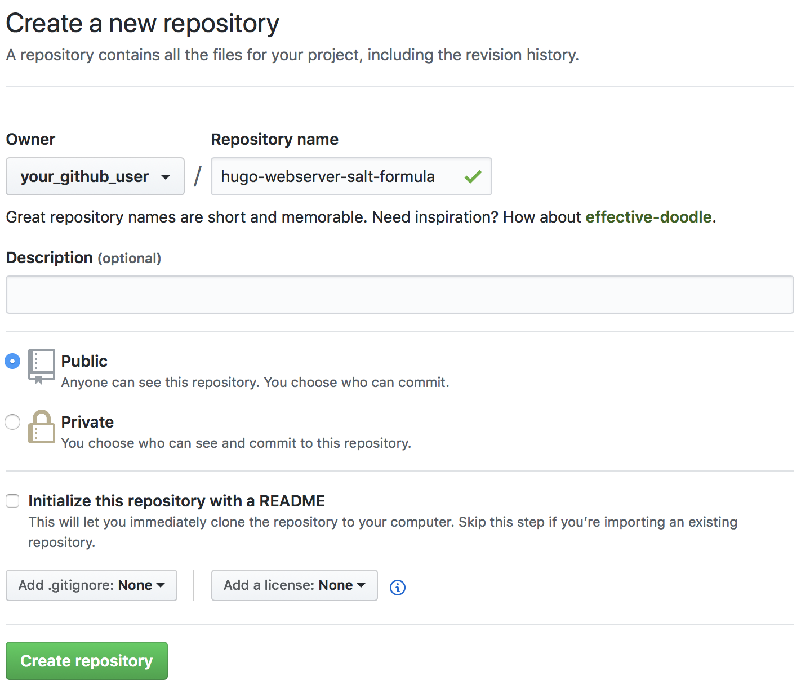
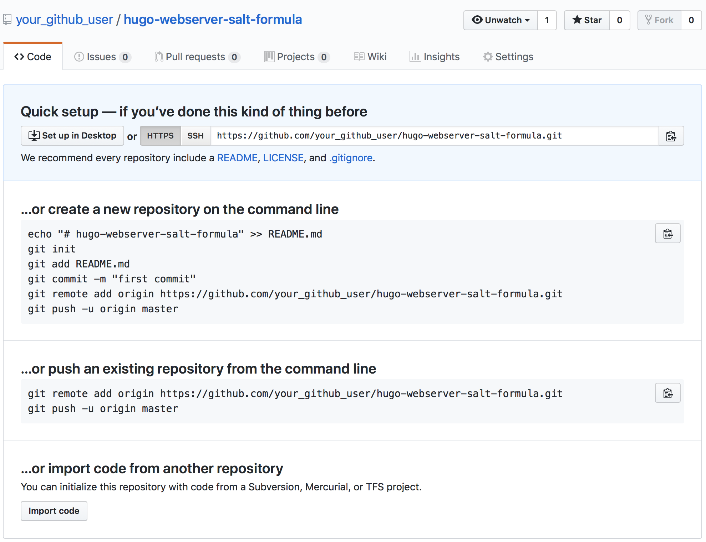
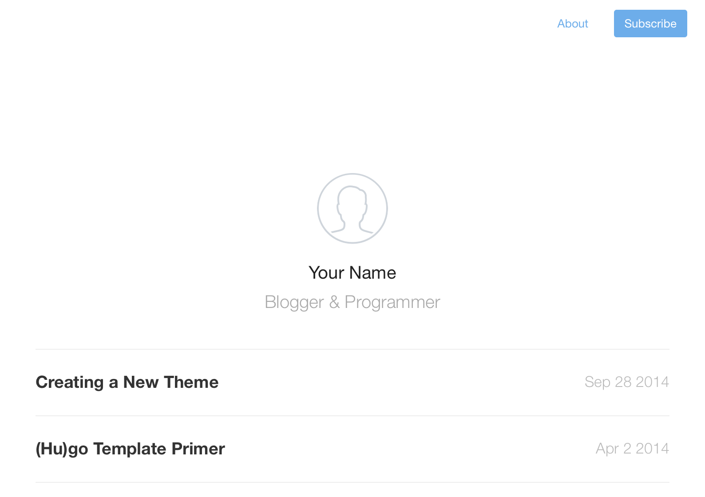
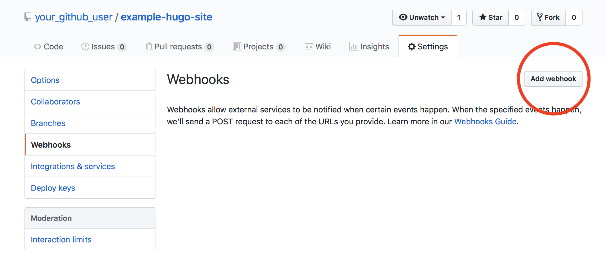
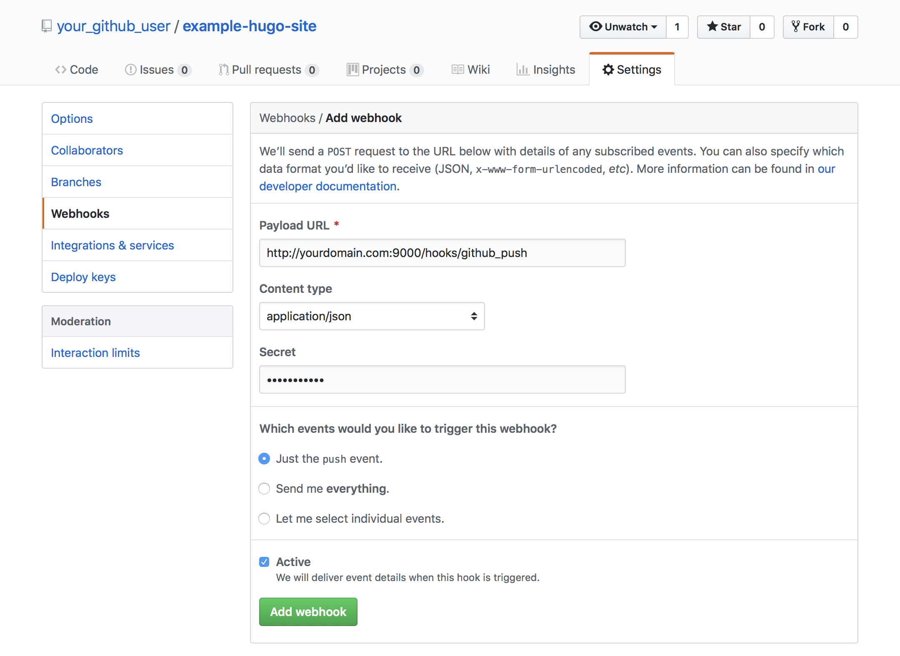
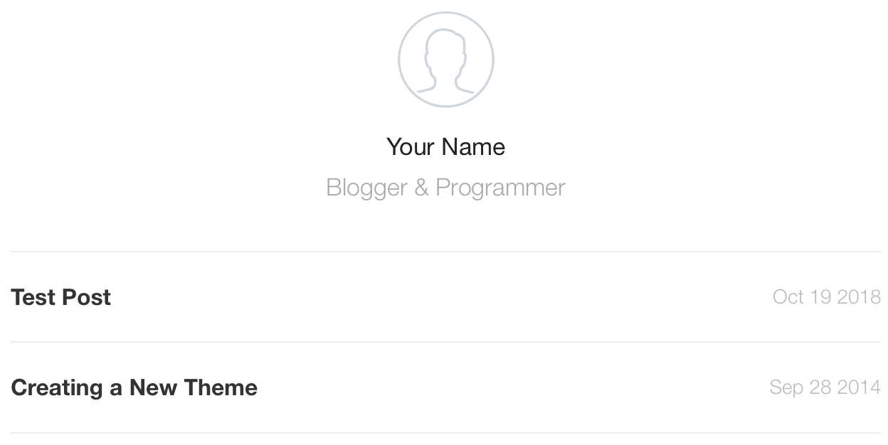
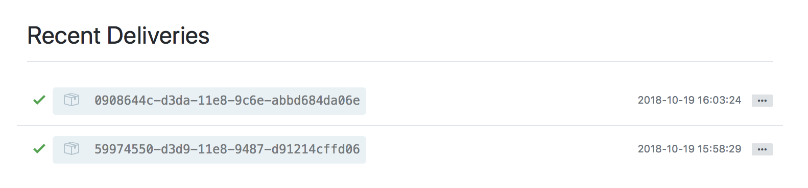

Automate Static Site Deployments with Salt, Git, and Webhooks
Updated by Linode Contributed by Nathan Melehan
This guide will walk through the deployment of a static site using SaltStack, which is a flexible configuration management system. The configuration files created for Salt will be version controlled using Git. Updates to your static site’s code will be automatically communicated to the production system using webhooks, an event notification system for the web.
Setting up these mechanisms offers an array of benefits:
Using webhooks will keep your production website in sync with your development without any actions needed on your part.
Using Salt provides an extensible, reliable way to alter your production systems and minimize human error.
Version controlling your configuration management helps you track or revert the changes you’ve made to your systems and collaborate with others on your deployments.
Development and Deployment Workflow
The static site generator used in this guide is Hugo, a fast framework written in Go. Static site generators compile markdown or other content files into HTML files. This guide can easily be adapted to other frameworks.
Two Git repositories will be created: one will track changes to the Hugo site, and the other will track Salt’s configuration files. Remote repositories will be created for both on GitHub.
Two Linodes will be created: one will act as the Salt master, and the other as the Salt minion. This guide was tested under Debian 9, but the instructions may work with other distributions as well. The Salt minion will run the production webserver which serves the Hugo site, and the master will configure the minion’s software. The minion will also run a webhook server which will receive code update notifications from GitHub.
It is possible to run Salt in a masterless mode, but using a Salt master will make it easier to expand on your deployment in the future.
NoteThe workflow described in this guide is similar to how Linode’s own Guides & Tutorials website is developed and deployed.
Before You Begin
Set Up the Development Environment
Development of your Hugo site and your Salt formula will take place on your personal computer. Some software will need to be installed on your computer first:
Install Git using one of the methods in Linode’s guide. If you have a Mac, use the Homebrew method, as it will also be used to install Hugo.
Install Hugo. The Hugo documentation has a full list of installation methods, and instructions for some popular platforms are as follows:
Debian/Ubuntu:
sudo apt-get install hugoFedora, Red Hat and CentOS:
sudo dnf install hugoMac, using Homebrew:
brew install hugoWindows, using Chocolatey
choco install hugo -confirm
Deploy the Linodes
Follow the Getting Started guide and deploy two Linodes running Debian 9.
In the settings tab of your Linodes’ dashboards, label one of the Linodes as
salt-masterand the other assalt-minion. This is not required, but it will help keep track of which Linode serves which purpose.Complete the Securing Your Server guide on each Linode to create a limited Linux user account with
sudoprivileges, harden SSH access, and remove unnecessary network services.Note
This guide is written for a non-root user. Commands that require elevated privileges are prefixed with
sudo. If you’re not familiar with thesudocommand, visit our Users and Groups guide.All configuration files should be edited with elevated privileges. Remember to include
sudobefore running your text editor.Configure DNS for your site by adding a domain zone and setting up reverse DNS on your Salt minion’s IP address.
Set Up the Salt Master and Salt Minion
Before you can start setting up the Salt formulas for the minion, you first need to install the Salt software on the master and minion and set up communication between them.
Log into the Salt master Linode via SSH and run the Salt installation bootstrap script:
wget -O bootstrap-salt.sh https://bootstrap.saltstack.com sudo sh bootstrap-salt.sh -M -NNote
The-Moption tells the script to install the Salt master software, and the-Noption tells the script to not install the minion software.Log into the Salt minion Linode via SSH and set the hostname. This guide uses
hugo-webserveras the example hostname:sudo hostnamectl set-hostname hugo-webserverNote
This step needs to be completed before installing Salt on the minion, as Salt will use your hostname to generate the minion’s Salt ID.Edit the minion’s
/etc/hostsfile and append a new line for your hostname after thelocalhostline; replace 192.0.2.3 with your minion’s public IP address:- /etc/hosts
-
1 2 3127.0.0.1 localhost 192.0.2.3 hugo-webserver # [...]
Run the bootstrap script on the minion:
wget -O bootstrap-salt.sh https://bootstrap.saltstack.com sudo sh bootstrap-salt.shEdit
/etc/salt/minionon the Salt minion. Uncomment the line that begins with#master:and enter your Salt master’s IP after the colon (in place of192.0.2.2):- /etc/salt/minion
-
1 2 3# [...] master: 192.0.2.2 # [...]
Note
Linode does not charge for traffic within a datacenter across private IP addresses. If your Salt master and minion are in the same datacenter, and both have a private IP addresses, you can use your Salt master’s private IP address in this step to avoid incurring data traffic charges.Restart Salt on the minion:
sudo systemctl restart salt-minion
Salt Minion Authentication
The minion should now be able to find the master, but it has not yet been authenticated to communicate with the master. Salt uses public-private keypairs to authenticate minions to masters.
On the master, list fingerprints for all the master’s local keys, accepted minion keys, and unaccepted keys:
sudo salt-key --finger-allThe output should resemble:
Local Keys: master.pem: fe:1f:e8:3d:26:83:1c:... master.pub: 2b:93:72:b3:3a:ae:cb:... Unaccepted Keys: hugo-webserver: 29:d8:f3:ed:91:9b:51:...Note
The example fingerprints in this section have been truncated for brevity.Copy the fingerprint for
master.pubfrom the output ofsalt-key --finger-all. On your Salt minion, open/etc/salt/minionin a text editor. Uncomment the line that begins with#master_finger:and enter the value for yourmaster.pubafter the colon in single-quotes:- /etc/salt/minion
-
1 2 3# [...] master_finger: '0f:d6:5f:5e:f3:4f:d3:...' # [...]
Restart Salt on the minion:
sudo systemctl restart salt-minionView the minion’s local key fingerprint:
sudo salt-call key.finger --locallocal: 29:d8:f3:ed:91:9b:51:...Compare the output’s listed fingerprint to the fingerprints listed by the Salt master for any
Unaccepted Keys. This is the output ofsalt-key --finger-allrun on the master in the beginning of this section.After verifying, that the minion’s fingerprint is the same as the fingerprint detected by the Salt master, run the following command on the master to accept the minion’s key:
sudo salt-key -a hugo-webserverFrom the master, verify that the minion is running:
sudo salt-run manage.upYou can also run a Salt test ping from the master to the minion:
sudo salt 'hugo-webserver' test.pinghugo-webserver: True
Initialize the Salt Minion’s Formula
The Salt minion is ready to be configured by the master. These configurations will be written in a Salt formula which will be hosted on GitHub.
On your computer, create a new directory to hold your minion’s formula and change to that directory:
mkdir hugo-webserver-salt-formula cd hugo-webserver-salt-formulaInside the formula directory, create a new
hugodirectory to hold your webserver’s configuration:mkdir hugoInside the
hugodirectory, create a newinstall.slsfile:- hugo-webserver-salt-formula/hugo/install.sls
-
1 2 3nginx_pkg: pkg.installed: - name: nginx
Note
Salt configurations are declared in YAML– a markup language that incorporates whitespace/indentation in its syntax. Be sure to use the same indentation as the snippets presented in this guide.A
.slsfile is a SaLt State file. Salt states describe the state a minion should be in after the state is applied to it: e.g., all the software that should be installed, all the services that should be run, and so on.The above snippet says that a package with name
nginx(i.e. the NGINX web server) should be installed via the distribution’s package manager. Salt knows how to negotiate software installation via the built-in package manager for various distributions. Salt also knows how to install software via NPM and other package managers.The string
nginx_pkgis the ID for the state component,pkgis the name of the Salt module used, andpkg.installedis referred to as a function declaration. The component ID is arbitrary, so you can name it however you prefer.Note
If you were to name the ID to be the same as the relevant installed package, then you do not need to specify the
- nameoption, as it will be inferred from the ID. For example, this snippet also installs NGINX:- hugo-webserver-salt-formula/hugo/install.sls
-
1 2nginx: pkg.installed
The same name/ID convention is true for other Salt modules.
Inside the
hugodirectory, create a newservice.slsfile:- hugo-webserver-salt-formula/hugo/service.sls
-
1 2 3 4 5 6nginx_service: service.running: - name: nginx - enable: True - require: - pkg: nginx_pkg
This state says that the
nginxservice should be immediately run and be enabled to run at boot. For a Debian 9 system, Salt will set the appropriate systemd configurations to enable the service. Salt also supports other init systems.The
requirelines specify that this state component should not be applied until after thenginx_pkgcomponent has been applied.Note
Unless specified by arequiredeclaration, Salt makes no guarantees about the order that different components are applied. The order that components are listed in a state file does not necessarily correspond with the order that they are applied.Inside the
hugodirectory, create a newinit.slsfile with the following contents:- hugo-webserver-salt-formula/hugo/init.sls
-
1 2 3include: - hugo.install - hugo.service
Using the
includedeclaration in this way simply concatenates theinstall.slsandservice.slsfiles into a single combined state file.Right now, these state files only install and enable NGINX. More functionality will be enabled later in this guide.
The
installandservicestates will not be applied to the minion on their own–instead, only the combinedinitstate will ever be applied. In Salt, when a file namedinit.slsexists inside a directory, Salt will refer to that particular state by the name of the directory it belongs to (i.e.hugoin our example).Note
The organization of the state files used here is not mandated by Salt. Salt does not place restrictions on how you organize your states. This specific structure is presented as an example of a best practice.
Push the Salt Formula to GitHub
Inside your
hugo-webserver-salt-formuladirectory on your computer, initialize a new Git repository:cd ~/hugo-webserver-salt-formula git initStage the files you just created:
git add .Review the staged files:
git statusOn branch master No commits yet Changes to be committed: (use "git rm --cached..." to unstage) new file: hugo/init.sls new file: hugo/install.sls new file: hugo/service.sls Commit the files:
git commit -m "Initial commit"Log into the GitHub website in your browser and navigate to the Create a New Repository page.
Create a new public repository with the name
hugo-webserver-salt-formula:
Copy the HTTPS URL for your new repository:

In your local Salt formula repository, add the GitHub repository as the
originremote and push your new files to it. Replacegithub-usernamewith your GitHub user:git remote add origin https://github.com/github-username/hugo-webserver-salt-formula.git git push -u origin masterNote
If you haven’t pushed anything else to your GitHub account from the command line before, you may be prompted to authenticate with GitHub. If you have two-factor authentication enabled for your account, you will need to create and use a personal access token.If you navigate back to your
hugo-webserver-salt-formularepository on GitHub and refresh the page, you should now see your new files.
Enable GitFS on the Salt Master
Update your Salt master to serve the new formula from GitHub:
Salt requires that you install a Python interface to Git to use GitFS. On the Salt master Linode:
sudo apt-get install python-gitOpen
/etc/salt/masterin a text editor. Uncomment thefileserver_backenddeclaration and enterrootsandgitfsin the declaration list:- /etc/salt/master
-
1 2 3fileserver_backend: - roots - gitfs
rootsrefers to Salt files stored on the master’s filesystem. While the Hugo webserver Salt formula is stored on GitHub, the Salt Top file will be stored on the master. The Top file is how Salt maps states to the minions they will be applied to.In the same file, uncomment the
gitfs_remotesdeclaration and enter your Salt formula’s repository URL:- /etc/salt/master
-
1 2gitfs_remotes: - https://github.com/your_github_user/hugo-webserver-salt-formula.git
Uncomment the
gitfs_providerdeclaration and set its value togitpython:- /etc/salt/master
-
1gitfs_provider: gitpython
Apply the Formula’s State to the Minion
In
/etc/salt/master, uncomment thefile_rootsdeclaration and set the following values:- /etc/salt/master
-
1 2 3file_roots: base: - /srv/salt/
file_rootsspecifies where state files are kept on the Master’s filesystem. This is referenced when- rootsis declared in thefileserver_backendsection.baserefers to a Salt environment, which is a tree of state files that can be applied to minions. This guide will only use thebaseenvironment, but other environments could be created for development, QA, and so on.Restart Salt on the master to enable the changes in
/etc/salt/master:sudo systemctl restart salt-masterCreate the
/srv/saltdirectory on the Salt master:sudo mkdir /srv/saltCreate a new
top.slsfile in/srv/salt:- /srv/salt/top.sls
-
1 2 3base: 'hugo-webserver': - hugo
This is Salt’s Top file, and the snippet declares that the
hugo-webserverminion should receive theinit.slsstate from thehugodirectory (from your GitHub-hosted Salt formula).Tell Salt to apply states from the Top file to the minion:
sudo salt 'hugo-webserver' state.applySalt as refers to this command as a highstate. Running a highstate can take a bit of time to complete, and the output of the command will describe what actions were taken on the minion. The output will also show if any actions failed.
Note
If you see an error similar to:
No matching sls found for 'hugo' in env 'base'Try running this command to manually fetch the Salt formula from GitHub, then run the
state.applycommand again:sudo salt-run fileserver.updateSalt’s GitFS fetches files from remotes periodically, and this period can be configured.
If you visit your domain name in a web browser, you should now see NGINX’s default test page served by the Salt minion.
Initialize the Hugo Site
On your computer, create a new Hugo site. Make sure you are not running this command in your
hugo-webserver-salt-formuladirectory:hugo new site example-hugo-siteNavigate to the new Hugo site directory and initialize a Git repository:
cd example-hugo-site git initInstall a theme into the
themes/directory. This guide uses the Cactus theme:git submodule add https://github.com/digitalcraftsman/hugo-cactus-theme.git themes/hugo-cactus-themeThe theme comes with some example content. Copy it into the root of your site so that it can be viewed:
cp -r themes/hugo-cactus-theme/exampleSite/ .Edit the
baseurl,themesDir, andnameoptions inconfig.tomlas follows; replaceexample.comwith your own domain andYour Namewith your own name:- example-hugo-site/config.toml
-
1 2 3 4 5 6# [...] baseURL = "http://example.com" # [...] themesDir = "themes" # [...] name = "Your Name"
Run the Hugo development server on your computer:
hugo serverThe output from this command will end with a line like:
Web Server is available at http://localhost:1313/ (bind address 127.0.0.1)If you view the URL from this output in a browser, you can see your new Hugo site:

Enter CTRL-C in the terminal session on your computer to stop the Hugo development server. Open the
.gitignorefile and make surepublic/is listed. The default.gitignorefrom the Cactus theme should look like:- example-hugo-site/config.toml
-
1 2public/ themes
The
publicdirectory is the result of Hugo compiling the Markdown content files into HTML. These files can be regenerated by anyone who downloads your site code, so they won’t be checked into version control.
Push the Hugo Site to GitHub
In the Hugo site directory, commit the new site files:
git add . git commit -m "Initial commit"Create a new public repository on GitHub named
example-hugo-siteand copy the repository’s HTTPS URL.In the site directory, add the GitHub repository as the
originremote and push your new files to it; replacegithub-usernamewith your GitHub user:git remote add origin https://github.com/github-username/example-hugo-site.git git push -u origin master
Deploy the Hugo Site
The Salt minion’s formula needs to be updated in order to serve the Hugo site. Specifically, the formula will need to have states which:
Install Git and clone the Hugo site repository from GitHub.
Install Hugo and build the HTML files from the markdown content.
Update the NGINX configuration to serve the built site.
Some of the new state components will refer to data stored in Salt Pillar. Pillar is a Salt system that stores private data and other parameters that you don’t want to list in your formulas. The Pillar data will be kept as a file on the Salt master and not checked into version control.
NoteThere are methods for securely checking this data into version control or using other backends to host the data, but those strategies are outside the scope of this guide.
Pillar data is injected into state files with Salt’s Jinja templating feature. State files are first evaluated as Jinja templates and then as YAML afterwards.
Install Git and Hugo
In your local Salt formula’s repository, edit the install.sls file to append the git_pkg and hugo_pkg states:
- hugo-webserver-salt-formula/hugo/install.sls
-
1 2 3 4 5 6 7 8 9 10 11# [...] git_pkg: pkg.installed: - name: git hugo_pkg: pkg.installed: - name: hugo - sources: - hugo: https://github.com/gohugoio/hugo/releases/download/v{{ pillar['hugo_deployment_data']['hugo_version'] }}/hugo_{{ pillar['hugo_deployment_data']['hugo_version'] }}_Linux-64bit.deb
The first state component installs Git, and the second component installs Hugo. The second component’s sources declaration specifies that the package should be downloaded from Hugo’s GitHub repository (instead of from the distribution package manager).
The {{ }} syntax that appears in {{ pillar['hugo_deployment_data']['hugo_version'] }} is a Jinja substitution statement. pillar['hugo_deployment_data']['hugo_version'] returns the value of the hugo_version key from a dictionary named hugo_deployment_data in Pillar. Keeping the Hugo version in Pillar lets you update Hugo without needing to update your formulas.
Clone the Hugo Site Git Repository
Create a new config.sls file in your local Salt formula repository’s hugo directory:
- hugo-webserver-salt-formula/hugo/config.sls
-
1 2 3 4 5 6 7 8 9 10 11 12 13 14 15 16 17 18 19 20 21 22hugo_group: group.present: - name: {{ pillar['hugo_deployment_data']['group'] }} hugo_user: user.present: - name: {{ pillar['hugo_deployment_data']['user'] }} - gid: {{ pillar['hugo_deployment_data']['group'] }} - home: {{ pillar['hugo_deployment_data']['home_dir'] }} - createhome: True - require: - group: hugo_group hugo_site_repo: cmd.run: - name: git clone --recurse-submodules https://github.com/{{ pillar['hugo_deployment_data']['github_account'] }}/{{ pillar['hugo_deployment_data']['site_repo_name'] }}.git - cwd: {{ pillar['hugo_deployment_data']['home_dir'] }} - runas: {{ pillar['hugo_deployment_data']['user'] }} - creates: {{ pillar['hugo_deployment_data']['home_dir'] }}/{{ pillar['hugo_deployment_data']['site_repo_name'] }} - require: - pkg: git_pkg - user: hugo_user
The final hugo_site_repo component in this snippet is responsible for cloning the example Hugo site repository from GitHub. This cloned repo is placed in the home directory of a system user that Salt creates in the preceding components. The clone command also recursively downloads the Cactus theme submodule.
NoteThe- createsdeclaration tells Salt that running thecmdcommand module will result in the creation of the file that’s specified. If the state is applied again later, Salt will check if that file already exists. If it exists, Salt will not run the module again.
The require declarations in each component ensure that:
- The clone is not run until the system user and home directory have been created, and until the software package for Git has been installed.
- The user is not created until the group it belongs to is created.
Instead of hard-coding the parameters for the user, group, home directory, GitHub account, and repository name, these are retrieved from Pillar.
Configure NGINX
Append the following states to your
config.sls:- hugo-webserver-salt-formula/hugo/config.sls
-
1 2 3 4 5 6 7 8 9 10 11 12 13 14 15 16 17 18 19 20 21 22 23 24 25 26 27 28 29 30 31 32 33 34nginx_default: file.absent: - name: '/etc/nginx/sites-enabled/default' - require: - pkg: nginx_pkg nginx_config: file.managed: - name: /etc/nginx/sites-available/hugo_site - source: salt://hugo/files/hugo_site - user: root - group: root - mode: 0644 - template: jinja - require: - pkg: nginx_pkg nginx_symlink: file.symlink: - name: /etc/nginx/sites-enabled/hugo_site - target: /etc/nginx/sites-available/hugo_site - user: root - group: root - require: - file: nginx_config nginx_document_root: file.directory: - name: {{ pillar['hugo_deployment_data']['nginx_document_root'] }}/{{ pillar['hugo_deployment_data']['site_repo_name'] }} - user: {{ pillar['hugo_deployment_data']['user'] }} - group: {{ pillar['hugo_deployment_data']['group'] }} - dir_mode: 0755 - require: - user: hugo_user
- The
nginx_defaultcomponent removes the symlink insites-enabledfor the default NGINX config, which disables that configuration. nginx_configandnginx_symlinkthen create a new configuration file insites-availableand a symlink to it insites-enabled.- The
nginx_document_rootcomponent creates the directory that NGINX will serve your Hugo site files from (when filled in with Pillar data, this will directory will look like/var/www/example-hugo-site).
The
- source: salt://hugo/files/hugo_sitedeclaration innginx_configrefers to an NGINX configuration file that doesn’t exist in your repository yet. Create thefiles/directory:cd ~/hugo-webserver-salt-formula/hugo mkdir filesCreate the
hugo_sitefile insidefiles/:- hugo-webserver-salt-formula/hugo/files/hugo_site
-
1 2 3 4 5 6 7 8 9 10 11 12 13server { listen 80; listen [::]:80; server_name {{ pillar['hugo_deployment_data']['domain_name'] }}; root {{ pillar['hugo_deployment_data']['nginx_document_root'] }}/{{ pillar['hugo_deployment_data']['site_repo_name'] }}; index index.html index.htm index.nginx-debian.html; location / { try_files $uri $uri/ = /404.html; } }
The
nginx_configcomponent that manages this file also listed the- template: jinjadeclaration, so the source file is interpreted as a Jinja template. The source file is able to substitute values from Pillar using the Jinja substitution syntax.Replace the content of your
service.slswith this snippet:- hugo-webserver-salt-formula/hugo/service.sls
-
1 2 3 4 5 6 7 8nginx_service: service.running: - name: nginx - enable: True - require: - file: nginx_symlink - watch: - file: nginx_config
The
nginx_servicecomponent now requiresnginx_symlinkinstead ofnginx_pkg. Without this change, the service may be enabled and run before the new NGINX configuration is set up. The- watchdeclaration also instructs NGINX to restart whenever a change tonginx_configis made.
Build Hugo
Append a
build_scriptstate toconfig.sls:- hugo-webserver-salt-formula/hugo/config.sls
-
1 2 3 4 5 6 7 8 9 10 11 12 13 14 15 16 17 18 19build_script: file.managed: - name: {{ pillar['hugo_deployment_data']['home_dir'] }}/deploy.sh - source: salt://hugo/files/deploy.sh - user: {{ pillar['hugo_deployment_data']['user'] }} - group: {{ pillar['hugo_deployment_data']['group'] }} - mode: 0755 - template: jinja - require: - user: hugo_user cmd.run: - name: ./deploy.sh - cwd: {{ pillar['hugo_deployment_data']['home_dir'] }} - runas: {{ pillar['hugo_deployment_data']['user'] }} - creates: {{ pillar['hugo_deployment_data']['nginx_document_root'] }}/{{ pillar['hugo_deployment_data']['site_repo_name'] }}/index.html - require: - file: build_script - cmd: hugo_site_repo - file: nginx_document_root
This state uses more than one module. The first module will download the
deploy.shfile from the salt master and place it on the minion. This script will be responsible for compiling your Hugo site files. The second module then calls that script. The first module is listed as a requirement of the second module, along with the Git clone command, and the creation of the document root folder.Note
The- createsoption in the second module ensures that Salt doesn’t rebuild Hugo if the state is re-applied to the minion.Create the
deploy.shscript infiles/:- hugo-webserver-salt-formula/hugo/files/deploy.sh
-
1 2 3 4#!/bin/bash cd {{ pillar['hugo_deployment_data']['site_repo_name'] }} hugo --destination={{ pillar['hugo_deployment_data']['nginx_document_root'] }}/{{ pillar['hugo_deployment_data']['site_repo_name'] }}
Hugo’s build function is called with NGINX’s document root as the destination for the built files.
Update
init.slsto include the newconfig.slsfile:- hugo-webserver-salt-formula/hugo/init.sls
-
1 2 3 4include: - hugo.install - hugo.config - hugo.service
Push the Salt Formula Updates to GitHub
Your state files should now have these contents: init.sls, install.sls, config.sls, service.sls.
The files present in your Salt formula repository should be:
hugo
├── config.sls
├── files
│ ├── deploy.sh
│ └── hugo_site
├── init.sls
├── install.sls
└── service.sls
Stage all the changes you made to your local Salt formula files in the previous steps and then commit the changes:
cd ~/hugo-webserver-salt-formula git add . git commit -m "Deploy the Hugo site"Push the commit to your GitHub repository:
git push origin master
Create the Salt Pillar File
Open
/etc/salt/masteron the Salt master in a text editor. Uncomment thepillar_rootssection:- /etc/salt/master
-
1 2 3pillar_roots: base: - /srv/pillar
pillar_rootsperforms an analogous function tofile_roots: it specifies where Pillar data is stored on the master’s filesystem.Restart Salt on the master to enable the changes in
/etc/salt/master:sudo systemctl restart salt-masterCreate the
/srv/pillardirectory on the Salt master:sudo mkdir /srv/pillarCreate an
example-hugo-site.slsfile in/srv/pillarto contain the Pillar data for the minion. This file uses the same YAML syntax as other state files. Replace the values forgithub_accountanddomain_namewith your GitHub account and your site’s domain name:- /srv/pillar/example-hugo-site.sls
-
1 2 3 4 5 6 7 8 9hugo_deployment_data: hugo_version: 0.49 group: hugo user: hugo home_dir: /home/hugo github_account: your_github_user site_repo_name: example-hugo-site nginx_document_root: /var/www domain_name: yourdomain.com
Create a
top.slsfile in/srv/pillar. Similar to the Top file in your state tree, the Pillar’s Top file maps Pillar data to minions:- /srv/pillar/top.sls
-
1 2 3base: 'hugo-webserver': - example-hugo-site
Apply State Updates to the Minion
On the Salt master, apply the new states to all minions:
sudo salt '*' state.apply
NoteIn this guide there is only one minion, but Salt can use shell-style globbing and regular expressions to match against minion IDs when you have more than one. For example, this command would run a highstate on all minions whose IDs begin with
hugo:sudo salt 'hugo*' state.apply
If no changes are made, try manually fetching the Salt formula updates from GitHub and then run the state.apply command again:
sudo salt-run fileserver.update
When the operation finishes, your Hugo site should now be visible at your domain.
Deploy Site Updates with Webhooks
Your site is now deployed to production, but there is no automatic mechanism in place yet for updating the production server when you update your Hugo site’s content. To update the production server, your minion will need to:
Pull the latest changes pushed to the
masterbranch of your Hugo site repository on GitHub.Run the Hugo build process with the new content.
The deploy.sh script can be altered to pull changes from GitHub. These script changes will be made in the Salt formula repository. Then, we’ll set up webhooks to notify the Salt minion that updates have been made to the Hugo site.
Webhooks are HTTP POST requests specifically designed and sent by systems to communicate some kind of significant event. A webhook server listens for these requests and then takes some action when it receives one. For example, a GitHub repository can be configured to send webhook notifications whenever a push is made to the repository. This is the kind of notification we’ll configure, and the Salt minion will run a webhook server to receive them. Other event notifications can also be set up on GitHub.
Set Up a Webhook Server on the Salt Minion
In your local Salt formula repository, append a new
webhook_pkgstate to yourinstall.slsthat installs the webhook server package by adnanh:- hugo-webserver-salt-formula/hugo/install.sls
-
1 2 3webhook_pkg: pkg.installed: - name: webhook
Note
The webhook server written in Go by adnanh is a popular implementation of the concept, but it’s possible to write other HTTP servers that parse webhook payloads.Append two new components to your
config.sls:- hugo-webserver-salt-formula/hugo/config.sls
-
1 2 3 4 5 6 7 8 9 10 11 12 13 14 15 16 17 18 19 20 21 22 23 24 25 26webhook_systemd_unit: file.managed: - name: '/etc/systemd/system/webhook.service' - source: salt://hugo/files/webhook.service - user: root - group: root - mode: 0644 - template: jinja - require: - pkg: webhook_pkg module.run: - name: service.systemctl_reload - onchanges: - file: webhook_systemd_unit webhook_config: file.managed: - name: '/etc/webhook.conf' - source: salt://hugo/files/webhook.conf - user: root - group: {{ pillar['hugo_deployment_data']['group'] }} - mode: 0640 - template: jinja - require: - pkg: webhook_pkg - group: hugo_group
The first state creates a systemd unit file for the webhook service. The second state creates a webhook configuration. The webhook server reads the configuration and generates a webhook URL from it.
Create a
webhook.servicefile in your repository’sfiles/directory:- hugo-webserver-salt-formula/hugo/files/webhook.service
-
1 2 3 4 5 6 7 8 9 10[Unit] Description=Small server for creating HTTP endpoints (hooks) Documentation=https://github.com/adnanh/webhook/ [Service] User={{ pillar['hugo_deployment_data']['user'] }} ExecStart=/usr/bin/webhook -nopanic -hooks /etc/webhook.conf [Install] WantedBy=multi-user.target
Create a
webhook.conffile in your repository’sfiles/directory:- hugo-webserver-salt-formula/hugo/files/webhook.conf
-
1 2 3 4 5 6 7 8 9 10 11 12 13 14 15 16 17 18 19 20 21 22 23 24 25 26 27 28 29 30 31 32 33 34 35 36 37[ { "id": "github_push", "execute-command": "{{ pillar['hugo_deployment_data']['home_dir'] }}/deploy.sh", "command-working-directory": "{{ pillar['hugo_deployment_data']['home_dir'] }}", "trigger-rule": { "and": [ { "match": { "type": "payload-hash-sha1", "secret": "{{ pillar['hugo_deployment_data']['webhook_secret'] }}", "parameter": { "source": "header", "name": "X-Hub-Signature" } } }, { "match": { "type": "value", "value": "refs/heads/master", "parameter": { "source": "payload", "name": "ref" } } } ] } } ]
This configuration sets up a URL named
http://example.com:9000/hooks/github_push, where the last component of the URL is derived from the value of the configuration’sid.Note
The webhook server runs on port 9000 and places your webhooks inside ahooks/directory by default.When a POST request is sent to the URL:
The webhook server checks if the header and payload data from the request satisfies the rules in the
trigger-ruledictionary, which are:- That the SHA1 hash of the server’s webhook secret matches the secret in the request headers. This prevents people who don’t know your webhook secret from triggering the webhook’s action.
- The
refparameter in the payload matchesrefs/heads/master. This ensures that only pushes to themasterbranch trigger the action.
If the rules are satisfied, then the command listed in
execute-commandis run, which is thedeploy.shscript.
Note
Further documentation on the webhook configuration options can be reviewed on the project’s GitHub repository.Append a new
webhook_servicestate to yourservice.slsthat enables and starts the webhook server:- hugo-webserver-salt-formula/hugo/service.sls
-
1 2 3 4 5 6 7webhook_service: service.running: - name: webhook - enable: True - watch: - file: webhook_config - module: webhook_systemd_unit
Update the
deploy.shscript so that it pulls changes frommasterbefore building the site:- hugo-webserver-salt-formula/hugo/files/deploy.sh
-
1 2 3 4 5#!/bin/bash cd {{ pillar['hugo_deployment_data']['site_repo_name'] }} git pull origin master hugo --destination={{ pillar['hugo_deployment_data']['nginx_document_root'] }}//{{ pillar['hugo_deployment_data']['site_repo_name'] }}
Your state files should now have these contents: init.sls (unchanged), install.sls, config.sls, service.sls. Save the changes made to your Salt files, then commit and push them to GitHub:
cd ~/hugo-webserver-salt-formula git add . git commit -m "Webhook server states" git push origin masterOn the Salt master, add a
webhook_secretto theexample-hugo-site.slsPillar. Your secret should be a complex, random alphanumeric string.- /srv/pillar/example-hugo-site.sls
-
1 2 3hugo_deployment_data: # [...] webhook_secret: your_webhook_secret
From the Salt master, apply the formula updates to the minion:
sudo salt-run fileserver.update sudo salt 'hugo-webserver' state.applyYour webhook server should now be running on the minion. If you run a
curlagainst it, you should see:curl http://example.com:9000/hooks/github_pushHook rules were not satisfied.⏎
Configure a Webhook on GitHub
Visit your example Hugo site repository on GitHub and navigate to the Webhooks section of the Settings tab. Click on the Add webhook button:

Fill in the form:
Enter
http://example.com:9000/hooks/github_pushfor the payload URL (substituteexample.comfor your own domain).Select
application/jsonfor the content type.Paste in the webhook secret that you previously added to Salt Pillar.
The webhook is configured to notify on push events by default. Keep this option selected.

Click the green Add webhook button to complete the setup.
Update the Hugo Site
In your local Hugo site repository, create a new post using Hugo’s archetypes feature:
hugo new post/test-post.mdThis command creates a new partially filled in markdown document in
content/post/. Open this file in your editor, remove thedraft: trueline from the frontmatter, and add some body text:- example-hugo-site/content/post/test-post.md
-
1 2 3 4 5 6--- title: "Test Post" date: 2018-10-19T11:39:15-04:00 --- Test post body text
If you run
hugo serverin the repository directory, you can see the new post:
Commit and push the new post to GitHub:
cd ~/example-hugo-site git add . git commit -m "Test post" git push origin masterVisit your domain in your browser; your test post should automatically appear.
Note
If your post does not appear, review the Recent Deliveries section at the bottom of your webhook configuration page on GitHub:

If you click on a delivery, full information about the request headers and payload and the server response are shown, and these may provide some troubleshooting information. Editing the
webhook.servicefile so that it starts the service in verbose mode may help.
Next Steps
The current Salt configuration can be used as a foundation for more complex deployments:
Host multiple Hugo sites by updating Pillar with further GitHub repositories.
Host different kinds of static sites by changing the Salt formula to support them.
Load balance your site by creating more minions and apply the same Pillar data and Salt states to them. Then, set up a NodeBalancer to direct traffic to the minions.
Set up a separate development branch and development server with Salt’s environments feature.
More Information
You may wish to consult the following resources for additional information on this topic. While these are provided in the hope that they will be useful, please note that we cannot vouch for the accuracy or timeliness of externally hosted materials.
- Hugo Documentation
- SaltStack Git Fileserver Documentation
- SaltStack Salt Formulas Documentation
- GitHub Developer - Webhooks
Join our Community
Find answers, ask questions, and help others.
This guide is published under a CC BY-ND 4.0 license.